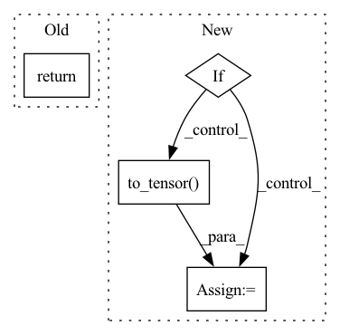

Pattern ID :29594
Before Change
input_ids = self.text_processing(prompt)
return dict(
input_ids=paddle.to_tensor(input_ids, dtype=paddle.int64),
pixel_values=paddle.to_tensor(target.transpose([2, 0, 1]), dtype=paddle.float32),
controlnet_cond=paddle.to_tensor(source.transpose([2, 0, 1]), dtype=paddle.float32),After Change
source = Image.open(os.path.join(self.file_path, source_filename))
target = Image.open(os.path.join(self.file_path, target_filename))
if self.do_image_processing:
// Normalize source images to [0, 1].
source = source.astype(np.float32) / 255.0
source = paddle.to_tensor(source.transpose([2, 0, 1]), dtype=paddle.float32)
// Normalize target images to [-1, 1].
target = (target.astype(np.float32) / 127.5) - 1.0
target = paddle.to_tensor( target.transpose([2, 0, 1]), dtype=paddle.float32)
if self.text_processing and self.do_text_processing:
input_ids = self.text_processing(prompt)
input_ids = paddle.to_tensor(input_ids, dtype=paddle.int64)In pattern: SUPERPATTERN
Frequency: 3
Non-data size: 4
Instances Fragment ID: 87732234
Project Name: paddlepaddle/paddlenlp
Commit Name: a56d9477e6ede8b321b3febcaa27acbb2f17453a
Time: 2023-06-02
Author: westfish@126.com
File Name: ppdiffusers/examples/t2i-adapter/adapter/dumpy_dataset.py
M Class Name: Fill50kDataset
N Class Name: Fill50kDataset
M Method Name: __getitem__(2)
N Method Name: __getitem__(2)
M Parent Class: Dataset
N Parent Class: Dataset
M File Name: ppdiffusers/examples/t2i-adapter/adapter/dumpy_dataset.py
N File Name: ppdiffusers/examples/t2i-adapter/adapter/dumpy_dataset.py
M Start Line: 50
M End Line: 69
N Start Line: 58
N End Line: 82
Before Change
data = DataProcessor.to_tensor(data)
return data
@staticmethod
def to_tensor(data: np.ndarray) -> torch.Tensor:After Change
processed_data = DataProcessor.to_tensor(data[i*batch_size:(i+1)*batch_size])
full_data.append(processed_data)
if num_in_last > 0:
// Detect potential nan
if DataProcessor.has_nan(data[-num_in_last:]):
raise ValueError("Nan detected in input data!")
processed_data = DataProcessor.to_tensor( data[-num_in_last:])
full_data.append(processed_data)
processed_data = torch.cat(full_data)
Fragment ID: 87732235
Project Name: clementchadebec/benchmark_vae
Commit Name: 47a67b8aae20af0f8fdee68b1cfd8d3aea49baea
Time: 2021-12-14
Author: clement.chadebec@orange.fr
File Name: src/pythae/data/preprocessors.py
M Class Name: DataProcessor
N Class Name: DataProcessor
M Method Name: _process_data_array(3)
N Method Name: _process_data_array(2)
M Parent Class:
N Parent Class:
M File Name: src/pythae/data/preprocessors.py
N File Name: src/pythae/data/preprocessors.py
M Start Line: 93
M End Line: 98
N Start Line: 92
N End Line: 123
Before Change
img = self.to_tensor(img)
if self.img_size != 64:
img = F.interpolate(img.unsqueeze(0), size=self.img_size).squeeze(0)
return {"input": img}
After Change
if self.img_size != 64:
img = F.interpolate(img.unsqueeze(0), size=self.img_size).squeeze(0)
output = {"input": img}
if self.all_instance_masks is not None:
ins = self.all_instance_masks[idx]
ins = self.to_tensor( ins)
if self.img_size != 64:
ins = F.interpolate(
ins.unsqueeze(0), size=self.img_size).squeeze(0)
output["instances"] = ins.type(torch.LongTensor)
return output Fragment ID: 87732232
Project Name: applied-ai-lab/genesis
Commit Name: 946fbd1bef531bb3b00bfc065afdcc25887496f6
Time: 2020-04-16
Author: 31702388+martinengelcke@users.noreply.github.com
File Name: datasets/multid_config.py
M Class Name: dSpritesDataset
N Class Name: dSpritesDataset
M Method Name: __getitem__(2)
N Method Name: __getitem__(2)
M Parent Class: Dataset
N Parent Class: Dataset
M File Name: datasets/multid_config.py
N File Name: datasets/multid_config.py
M Start Line: 110
M End Line: 113
N Start Line: 124
N End Line: 135